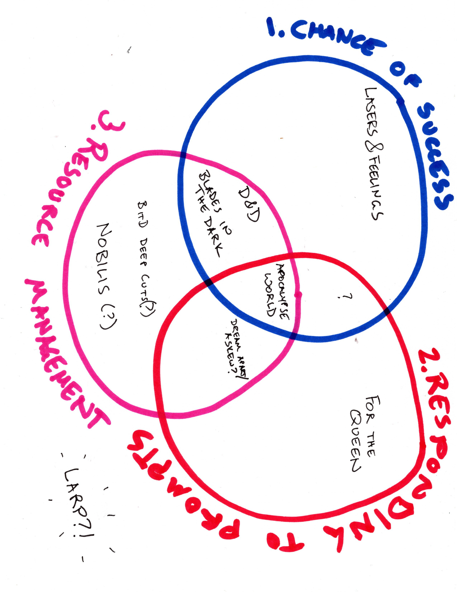

That I actually think is pretty useful! This also may just secretly be a post where I think about Blades in the Dark, since I’ve been playing a lot of that. Be warned!
Imagine a Venn diagram (imagine that I will later actually draw this), each circle is a thing the game is concerned with:
- Using chance (rolling dice, etc.) to determine if an action succeeds or fails
- Responding to prompts
- Resource management
Future-Brendan here, I did draw it! Here it is!

Examples
- 1 only: Lasers & Feelings (and many other ultra light games)
- 2 only: For the Queen
- 3 only: Maybe Nobilis? Maybe someone who has actually played Nobilis can confirm?
- 1 & 2: Is there a PbtA game with no HP/conditions/resources? Do the conditions in Pasion de las Pasiones count as resource management? Is there a prompts-on-cards game with a success/failure mechanic?
- 1 & 3: D&D and friends (from 5E to Into the Odd), but also Blades in the Dark for example.
- 2 & 3: I think most Belonging Outside Belonging games fit in this category.
- 1, 2, & 3: Apocalypse World, baby! Moves cover both the chance of success/failure aspect and responding to prompts, and Hx, hold, harm, barter give you some amount of resource management.
- None: unless you count characters or the initial scene setting as a prompt, many larps might live entirely outside this categorization, which is an interesting way of understanding what makes these larps different from TTRPGs!
What I find useful about this is that it explains to me why Blades in the Dark feels sometimes feels more similar to playing a D&D-like game than it does to playing Apocalypse World. Apocalypse World (and PbtA in general) has responding to prompts as a major concern of the game, where Blades, and FitD more broadly, does away with the promptiness of PbtA moves, while maintaining a lot of the other aspects (playbooks, mixed-success, etc.).
I also think it’s kind of interesting that this way of dividing up games feels very sensible (at least if I talk confidently and don’t think about it too hard), but is of course one of a zillion ways to do it. Sam Sorenson’s Three Question Taxonomy divides things up along totally different lines for example (and is a 3-axis graph, rather than a venn diagram).
Even though my taxonomy here is shaky, and I literally wrote it in my notebook I keep beside my bed in case I have a thought in the middle of the night, as I think more about it, I think it’s interesting that it focusses on what you do as a player, but somehow manages to say that whether or not a game has a GM or if it is about storytelling isn’t actually that relevent to this particular lens through which to sort games.
Another thought I had triggered by this taxonomy: in Blades in the Dark Deep Cuts, the Threat Roll more or less removes the idea of success/failure from the game. Instead, you (mostly) always succeed, and the question becomes “at what cost?”. In this lens, BitD with Deep Cuts moves into the “resource management only” area of the Venn diagram and is now rubbing shoulders with Nobilis instead of D&D.
The point of this ramble is that while reading blog posts about taxonomies can sometimes feel like talking in circles, coming up with my own, personal taxonomy, was a really fruitful exercise for me that has helped me to think more deeply about the games I play!
I’d love to hear about your own personal, idiosyncratic, RPG taxonomies!
Should we do a game taxonomy jam? Did this already happen on the blogosphere in response to Sam Sorenson’s post and I’m just super late to the bandwagon? Someone please tell me if you want to participate in a taxonomy jam.